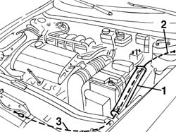

7025A26 bonnet lid opening control - repair
- Path
- Procedures > 70 FITTINGS > 7025 COMPARTMENT LIDS > 7025A bonnet lid > 7025A26 bonnet lid opening control - repair
- Kind
- repair procedure (removal / refitting; the operation number is the code)
- Applies to
- all engines; all production periods
- Interactive page
- https://sloeber94.github.io/elrnDB-a156/en/#/3238726
Applies to: engines: 1.9 JTD 16v; all production periods
 Removing
Removing
 Refitting
RefittingApplies to: engines: 1.9 JTD 16v; all production periods
7055A43 central front grille - r r
7055A41 RIGHT FRONT GRILLE - R.R. (left side)
7025A34 bonnet lid lock (one) - r+r or repair
7025A24 boot lid opening lever - r+r
1. Working in the engine compartment, open the cable sleeve.
2. Connect a probe to the inner end of the control cable. This operation is necessary to make it easier to refit the wires in the passenger compartment
3. Withdraw the control cable from the engine compartment.

Applies to: all engines; all production periods
Refitting
RemovingCheck that the control cable is undamaged.
Refit the control cable, fitting it from the engine bay side, using the sensor fitted during the removal.
Insert the control cable in the cable sleeve, then re-close the sleeve.
Refit the probe to the end of the control cable.
7025A24 boot lid opening lever - r+r
7025A34 bonnet lid lock (one) - r+r or repair
7055A41 RIGHT FRONT GRILLE - R.R. (left side)
Applies to: engines: 1.9 JTD 16v; all production periods
Topics linked from this page (6)
- 7025A12 Engine front sound insulation COVER - R.R.
- 7025A14 Bonnet LID - R.R.
- 7025A24 boot lid opening lever - r+r
- 7025A34 bonnet lid lock (one) - r+r or repair
- 7055A41 RIGHT FRONT GRILLE - R.R.
- 7055A43 central front grille - r r